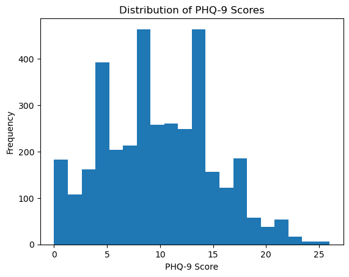
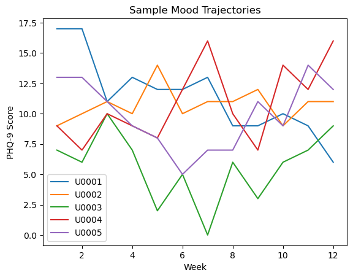
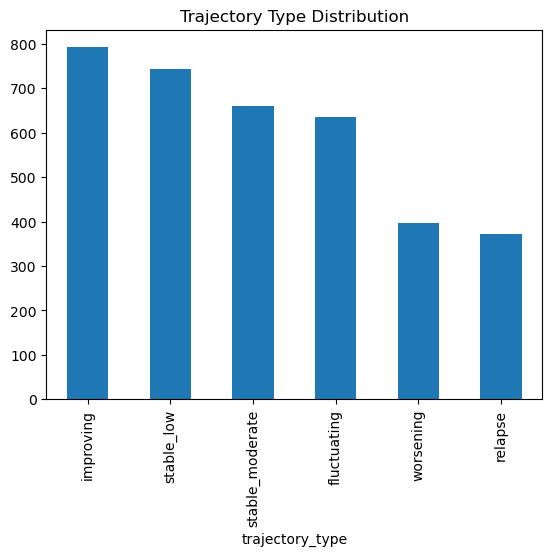

MoodTrack: Full-Stack Mental Health Analytics Dashboard
Author
Niivedita Bhadra
In this tutorial, we build MoodTrack, a full-stack mental health analytics dashboard using synthetic PHQ-9 data.
The project demonstrates how data science workflows can be transformed into an interactive web application using Python, Node.js, Express, SQLite, React, and deployment platforms such as Render and Netlify.
The goal is not to build a clinical tool, but to demonstrate a privacy-safe, educational pipeline for longitudinal mental health data analysis.
Data generation
In this section, we generate a synthetic PHQ-9-like dataset to simulate longitudinal mood patterns. Real patient data cannot be used due to privacy constraints, so we create realistic trajectories such as improvement, relapse, and fluctuation.
In this section, we explore the synthetic dataset generated to simulate longitudinal mental health patterns.
Each user is tracked over multiple weeks using a PHQ-9-like score ranging from 0 to 27. The dataset includes different trajectory types such as improving, worsening, relapse, and stable patterns.
This allows us to model realistic mental health trends without using sensitive or confidential data.
The dataset contains multiple observations per user, representing weekly measurements. Additional features such as sleep, stress, and activity levels are included to simulate real-world correlations.
Distribution of PHQ9 scores
import matplotlib.pyplot as pltplt.hist(df['phq9_score'], bins=20)plt.xlabel("PHQ-9 Score")plt.ylabel("Frequency")plt.title("Distribution of PHQ-9 Scores")plt.show()

The distribution shows a range of mental health states from minimal to severe. This diversity is important for building robust analytical models.
Visualize trajectory
import matplotlib.pyplot as pltsample_users = df['user_id'].unique()[:5]for user in sample_users: temp = df[df['user_id'] == user] plt.plot(temp['week'], temp['phq9_score'], label=user)plt.xlabel("Week")plt.ylabel("PHQ-9 Score")plt.title("Sample Mood Trajectories")plt.legend()plt.show()

The trajectories show different behavioral patterns:
Some users show gradual improvement over time
Others exhibit worsening symptoms
Some display relapse patterns, where symptoms improve and then worsen again
Fluctuating patterns reflect instability in mood
These patterns are intentionally simulated to reflect real-world longitudinal mental health dynamics.
df['trajectory_type'].value_counts().plot(kind='bar')plt.title("Trajectory Type Distribution")plt.show()

The dataset includes a balanced mix of trajectory types to ensure that downstream models can generalize across different mental health patterns.
High-risk observations correspond to PHQ-9 scores ≥ 15, which typically indicate moderate to severe depression levels.
This flag can later be used for classification tasks or alert systems in the application.
Designing the MoodTrack Backend API
After generating and exploring the synthetic PHQ-9 dataset, the next step is to expose the data through a backend API.
The backend acts as the bridge between the dataset and the frontend dashboard. Instead of reading the CSV file directly in the browser, the frontend will request data from API endpoints.
This design follows a common production pattern where the frontend, backend, and database are separated into different layers.
Then:
Installing Backend Dependencies
1. Go to backend folder
cd moodtrack/backend
Inside the backend folder, we initialize a Node.js project and install the required packages.
npm init -ynpm install express cors csv-parsernpm install --save-dev nodemon### 2. Install packagesRun:npm init -ynpm install express cors csv-parsernpm install --save-dev nodemonnodemon is used during development because it automatically restarts the server whenever we save changes.Then:### API EndpointsThe backend exposes the following API endpoints:|Endpoint|Purpose||---|---||`/api/health`|Checks whether the API is running ||`/api/mood`|Returns all weekly mood records ||`/api/users`|Returns unique user IDs ||`/api/mood/:user_id`|Returns mood trajectory for one user ||`/api/summary`|Returns user-level summary data |### Backend Implementation (server.js)Below is the complete implementation of the backend API using Node.js and Express.```javascriptconst express = require("express");const cors = require("cors");const fs = require("fs");const csv = require("csv-parser");const path = require("path");const app = express();const PORT = 5000;app.use(cors());app.use(express.json());letmoodData=[];letsummaryData=[];// Function to load CSV filesfunction loadCSV(filePath){returnnew Promise((resolve, reject)=> {const results = [];fs.createReadStream(filePath).pipe(csv()).on("data",(row)=> results.push(row)).on("end",()=> resolve(results)).on("error",(err)=> reject(err));});}// Load data and start serverasync function loadData(){try {moodData = await loadCSV(path.join(__dirname,"data", "moodtrack_synthetic_phq9_dataset.csv"));summaryData = await loadCSV(path.join(__dirname,"data", "moodtrack_user_summary.csv"));console.log("Mood data loaded:", moodData.length);console.log("Summary data loaded:", summaryData.length);// Start serverapp.listen(PORT, ()=> {console.log("MoodTrack API running on http://localhost:" + PORT);});}catch(error){console.error("Error loading data:", error);}}// API routesapp.get("/api/health",(req, res)=> {res.json({status:"OK", message: "API is running" });});app.get("/api/mood",(req, res)=> {res.json(moodData);});app.get("/api/users",(req, res)=> {const users = [...new Set(moodData.map((row)=> row.user_id))];res.json(users);});app.get("/api/mood/:user_id",(req, res)=> {const userId = req.params.user_id;const userRecords = moodData.filter((row)=> row.user_id === userId);if(userRecords.length === 0){returnres.status(404).json({error:"User not found" });}res.json(userRecords);});app.get("/api/summary",(req, res)=> {res.json(summaryData);});// InitializeloadData();
⚠️ Note: This code should NOT be run inside the Jupyter notebook.
It should be saved as server.js inside the backend folder and executed using Node.js.
Running the Backend
After writing server.js, we start the backend using:
npm run dev
The expected output is:
Mood data loaded: 3600Summary data loaded: 300MoodTrack API running on http://localhost:5000
Finally:
What We Learned
In this step, we converted a static CSV dataset into a simple backend API.
This is an important transition from data analysis to application development. Instead of keeping the data only inside a notebook, we created a service that can provide data to a web application.
This pattern is common in production systems:
Dataset → Backend API → Frontend Dashboard
Building the Frontend Dashboard with React
After building the backend API, the next step is to create a frontend application that can visualize the data.
We use React to build an interactive dashboard that communicates with the backend API.
The frontend will: - Fetch user data from the backend - Allow selection of a user - Display mood trajectories over time
This separation between backend and frontend reflects modern web application architecture.
Creating the React Application
We create the frontend using Create React App:
npx create-react-app frontendcd frontend
This sets up a complete React project with all required dependencies.
📦 Installing Required Libraries
We install additional libraries:
npm install axios recharts
axios is used to fetch data from the backend API
recharts is used to visualize time-series data
▶️ Running the Frontend
Start the React development server:
npm start
The application will be available at: http://localhost:3000
Common Issue: HOST Environment Variable
On some systems, you may encounter an error related to the HOST environment variable.
This can be resolved by running:
unsetHOSTnpm start
OR
HOST=localhost npm start
What We Achieved
At this stage, we have:
A running backend API (Node.js + Express)
A React frontend application
A foundation for building an interactive dashboard
In the next step, we will connect the frontend to the backend and visualize the mood trajectories.
Connecting the Frontend to the Backend API
After confirming that the React application runs successfully, we replace the default React page with a custom MoodTrack dashboard.
The goal of this step is to connect the frontend to the backend API and visualize user-level mood trajectories.
The frontend performs two API requests:
It fetches the list of available users from the backend.
It fetches the weekly PHQ-9 trajectory for the selected user.
The selected user’s PHQ-9 scores are then displayed as a line chart using the recharts library.
API Endpoints Used by the Frontend
Endpoint
Purpose
http://localhost:5000/api/users
Returns the list of synthetic user IDs
http://localhost:5000/api/mood/:user_id
Returns weekly PHQ-9 records for the selected user
Frontend Logic
The React frontend uses useEffect to fetch data from the backend.
The first useEffect loads the available user IDs when the page opens.
The second useEffect runs whenever a user is selected from the dropdown. It fetches the selected user’s weekly mood records and updates the chart.
Visualization
The PHQ-9 score is plotted over 12 weeks.
The x-axis represents the week number.
The y-axis represents the PHQ-9 score.
Each line shows the mood trajectory of one selected synthetic user.
This helps us visually inspect whether a user is improving, worsening, stable, or fluctuating over time.
What We Learned
In this step, we connected a React frontend to a Node.js backend API.
This is an important full-stack pattern:
```text React frontend → API request → Express backend → CSV data → JSON response → Chart
Current Status
At this stage, we have built a complete end-to-end system:
Synthetic mental health dataset
Backend API to serve the data
React frontend to visualize user trajectories
This represents a minimal viable version of the MoodTrack system.
In the next steps, we extend the system with summary insights, advanced visualizations, and predictive modeling.
Adding a Database Layer
Currently, MoodTrack uses CSV files as a data source.
To make the system production-ready, we introduce a database layer to store:
user information
weekly PHQ-9 scores
summary metrics
Data Science Extension
The MoodTrack system can be extended with predictive modeling to:
forecast future PHQ-9 scores
identify high-risk individuals
detect relapse patterns
Migrating from CSV to SQLite Database
Initially, the MoodTrack system used CSV files as the data source.
In this step, we replaced the CSV-based pipeline with a relational database using SQLite.
This introduces several advantages:
Structured storage of user and mood data
Faster querying using SQL
Scalable architecture for future deployment
Clear separation between data storage and application logic
The backend API was updated to query data directly from the SQLite database instead of reading CSV files.
Step 6: Adding a Predictive Analytics Layer
To extend the MoodTrack system beyond visualization, we introduced a simple predictive model.
We implemented a linear regression-based approach to estimate:
future PHQ-9 score (next week)
trend direction (increasing/decreasing)
risk category (low, moderate, high)
This demonstrates how machine learning models can be integrated directly into a backend API.